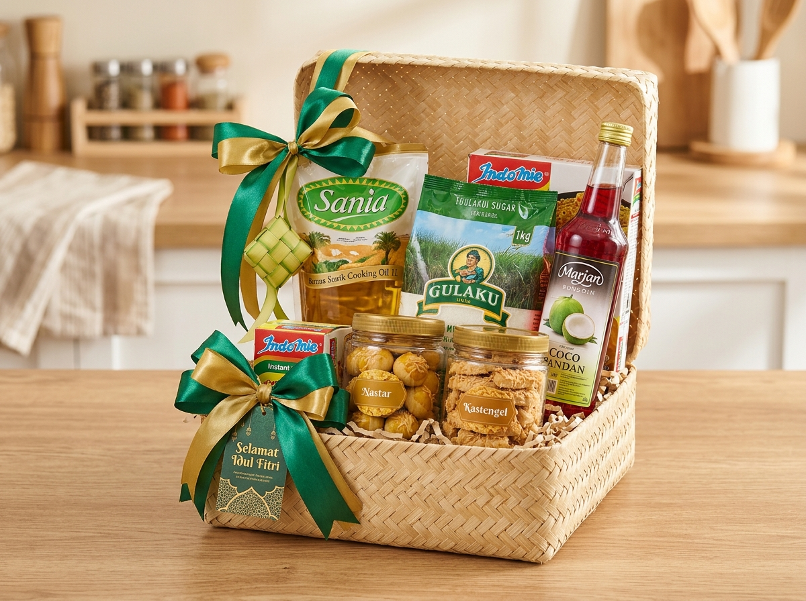

Menentukan kombinasi isi parcel sembako tidak boleh sembarangan. Di Parcel Lebaran, setiap komposisi yang dirancang memberikan kegunaan nyata, selaras dengan kebutuhan penerima, dan tetap berkesan anggun saat dibuka di hari raya.
Mengapa Pemilihan Isi Parcel Sembako Penting?
Isi parcel sembako menentukan manfaat dan kesan yang diterima oleh penerima bingkisan. Pemilihan produk sebaiknya mempertimbangkan kebutuhan rumah tangga, kualitas barang, kesesuaian tema, dan batasan anggaran yang dimiliki.
Parcel yang baik tidak harus selalu berisi puluhan barang yang saling berdesakan. Kombinasi beberapa kebutuhan pokok berkualitas tinggi dengan makanan pendamping yang tepat justru dapat menghasilkan bingkisan yang jauh lebih berkesan. Sebagai panduan induk, Anda dapat membaca ulasan komprehensif kami mengenai panduan utama parcel Lebaran sembako.
Berikut sepuluh inspirasi kombinasi isi parcel sembako yang telah terbukti diminati dan bermanfaat:
10 Ide Isi Parcel Sembako Lebaran
1. Paket Sembako Ekonomis
Paket ekonomis sangat cocok untuk pembagian sosial, program zakat mal, sedekah masjid, atau bingkisan massal bagi warga lingkungan sekitar.
Rekomendasi isi:
- Minyak goreng pouch 500 ml
- Gula pasir kemasan 500 gram
- Teh celup isi 25 kantong
- 3–5 bungkus mi instan
- 1 bungkus biskuit wafer hemat
2. Paket Sembako Lengkap
Paket sembako lengkap ditujukan sebagai bingkisan keluarga inti, kerabat dekat, maupun staf kantor yang membutuhkan pasokan dapur lengkap saat libur Idulfitri.
Rekomendasi isi:
- Beras premium 3 kg
- Minyak goreng kemasan botol 1–2 liter
- Gula pasir 1 kg
- Tepung terigu protein sedang 1 kg
- Mentega kaleng atau margarin sachet
- Susu kental manis kaleng
- 1 botol sirup rasa buah
3. Paket Sembako dan Kue Kering
Kombinasi ini menjadi favorit banyak orang karena memadukan kebutuhan bahan pokok harian dengan camilan khas Lebaran yang siap dihidangkan di meja tamu.
Rekomendasi isi:
- Beras kualitas super 2,5 kg
- Minyak goreng botol 1 liter
- Gula pasir kristal putih 1 kg
- 1 toples nastar wisman kemasan kedap udara
- 1 toples kastengel keju edam gurih

4. Paket Minuman Santai
Paket ini sangat cocok untuk keluarga yang gemar berkumpul dan berbincang hangat sambil menikmati sajian minuman manis segar di hari kemenangan.
Rekomendasi isi:
- Gula pasir 1 kg
- Sirup rasa cocopandan & melon
- Teh celup melati premium
- Kopi bubuk robusta/arabika kemasan foil
- Susu kental manis atau krimer bubuk
- 1 pasang mug keramik cantik bertema Idulfitri
5. Paket Bahan Kue (Baking Set)
Dikhususkan bagi kerabat atau ibu rumah tangga yang memiliki hobi membuat kue basah maupun kue kering buatan sendiri di rumah.
Rekomendasi isi:
- Tepung terigu protein rendah & sedang 1 kg
- Mentega kaleng kualitas premium
- Gula halus / icing sugar
- Susu kental manis kaleng
- Cokelat bubuk murni
- Keju cheddar blok
- Whisk pengocok telur atau spatula silikon estetik
6. Paket Bumbu dan Sambal Nusantara
Membantu penerima dalam mempersiapkan aneka hidangan khas Lebaran seperti opor ayam, rendang, dan sambal goreng ati dengan praktis.
Rekomendasi isi:
- Minyak goreng botol berkualitas 2 liter
- Lada bubuk dan bawang putih bubuk toples mini
- Ketumbar dan bumbu rempah kemasan rapat
- 2 botol sambal nusantara siap santap (sambal roa / sambal bawang)
- Kecap manis kedelai hitam kemasan botol
7. Paket Sembako dan Perlengkapan Ibadah
Kombinasi ini memberikan makna spiritual yang mendalam, mengingatkan penerima pada esensi kesucian dan rasa syukur Idulfitri.
Rekomendasi isi:
- Beras premium 3 kg
- Minyak goreng 1 liter & gula pasir 1 kg
- 1 helai sarung tenun halus bermerek resmi
- 1 buah sajadah travel anti-air dengan pouch ringkas
- Tasbih kayu alami beraroma wangi
8. Paket Sembako Premium
Didesain khusus untuk jajaran mitra bisnis penting, nasabah prioritas, atau keluarga mertua tercinta yang mengutamakan cita rasa produk kelas atas.
Rekomendasi isi:
- Beras organik pandan wangi bersertifikat 5 kg
- Minyak goreng kelapa murni (coconut oil) atau canola oil
- Madu hutan murni botol kaca bersegel
- Sirup artisan premium
- Teh putih / artisan tea loose leaf
- 1 kaleng butter cookies impor
9. Paket Sembako Tematik Sehat
Memberikan alternatif sehat bagi relasi yang menerapkan pola hidup sehat, lansia, atau penerima dengan pantangan konsumsi gula berlebih.
Rekomendasi isi:
- Beras merah atau beras hitam organik vakum 2 kg
- Minyak zaitun (extra virgin olive oil) botol kaca
- Madu murni alami
- Susu almond atau susu oat tanpa pemanis tambahan
- Granola oat dengan campuran buah kering
- Aneka kacang almond dan mete panggang
10. Paket Sembako Custom Perusahaan
Paket sembako yang dirancang fleksibel menyesuaikan identitas merek dan anggaran pengadaan instansi. Pelajari teknisnya di panduan paket sembako Lebaran untuk karyawan dan perusahaan.
Rekomendasi isi:
- Beras, minyak goreng, dan gula sesuai gramatur pesanan
- Sirup buah & biskuit kaleng
- Kemasan kardus atau tas spunbond berlogo instansi
- Kartu ucapan selamat Hari Raya Idulfitri resmi dengan tanda tangan direksi
Bagaimana Menentukan Isi Parcel Berdasarkan Anggaran?
Kunci keberhasilan menyusun parcel adalah disiplin alokasi anggaran. Untuk memahami komponen HPP dan estimasi biaya secara terperinci, simak ulasan daftar harga parcel sembako Lebaran.
Pada rentang anggaran ekonomis (di bawah Rp100.000), fokuskan anggaran pada komoditas wajib dengan gramatur praktis. Sedangkan pada rentang di atas Rp200.000, Anda leluasa memasukkan kemasan berkelas seperti keranjang rotan dan produk pelengkap bernilai tinggi.
Bagaimana Cara Membuat Isi Parcel Terlihat Lebih Menarik?
Agar sembako tidak terkesan kaku seperti belanjaan pasar swalayan biasa, terapkan sentuhan dekorasi berikut:
- Pilih Kemasan Bersih: Pastikan tidak ada kemasan tepung berdebu atau minyak yang berminyak di bagian luar.
- Harmonisasi Warna: Padukan warna label produk agar senada, misalnya perpaduan nuansa hijau-emas atau biru-putih khas Idulfitri.
- Gunakan Wadah yang Pas: Wadah yang terlalu besar akan membuat isi terlihat kosong, sedangkan wadah yang terlalu kecil membuat susunan rentan jatuh.
- Teknik Penataan Bertingkat: Tempatkan kemasan besar di belakang dan susun produk yang lebih kecil melandai ke arah depan.
- Pita dan Kartu Ucapan: Sematkan kartu ucapan eksklusif dengan font elegan di bagian tengah pita pembungkus.
Kesalahan yang Harus Dihindari Saat Menentukan Isi Parcel
- Memilih Produk Tanpa Memperhatikan Daya Tahan: Hindari memasukkan bahan segar yang mudah busuk seperti sayur basah atau telur mentah tanpa pelindung khusus.
- Mengabaikan Tanggal Kedaluwarsa: Jangan sampai ada produk yang masa kedaluwarsanya di bawah 6 bulan.
- Memaksa Terlalu Banyak Item: Parcel yang terlalu penuh akan sulit dibungkus rapi dan rentan rusak saat diangkut kurir.
Pertanyaan Seputar Isi Parcel Sembako Lebaran
Isi yang paling umum digunakan meliputi beras, minyak goreng, gula pasir, tepung terigu, teh celup, sirup, dan mi instan.
Sangat bisa. Toples nastar, kastengel, atau putri salju adalah pelengkap paling ideal yang membuat paket sembako semakin meriah menyambut Idulfitri.
Gunakan merek komoditas berkualitas tinggi, wadah keranjang rotan kokoh atau hardbox eksklusif, pita satin ganda, dan kartu ucapan berdesain elegan.
Kesimpulan
Sepuluh ide isi parcel sembako di atas membuktikan bahwa bingkisan kebutuhan pokok dapat dikreasikan menjadi hantaran yang variatif, estetik, dan penuh makna. Kunci utamanya adalah memprioritaskan manfaat produk, menyelaraskan dengan anggaran, serta memastikan kualitas pengemasan aman hingga tiba di alamat tujuan. Untuk mengetahui standar kurasi bahan pangan halal yang kami terapkan, silakan baca halaman tentang Parcel Lebaran.
Untuk melihat panduan menyeluruh tentang pemilihan vendor dan estimasi harga, kunjungi artikel utama kami di Panduan Parcel Lebaran Sembako atau langsung telusuri Katalog Paket Lebaran 2027.
Tertarik Membuat Parcel Sembako dengan Komposisi Sendiri?
Konsultasikan kombinasi produk pilihan Anda. Kami melayani perakitan parcel custom untuk pesanan perorangan maupun skala besar perusahaan.